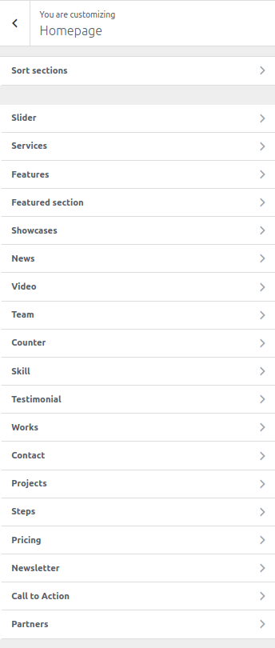
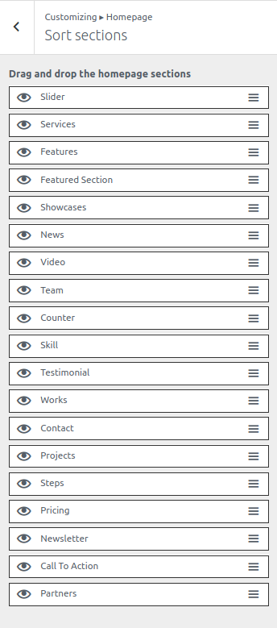
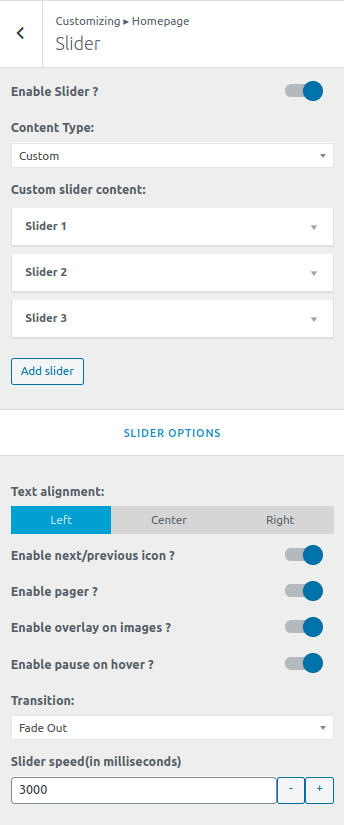

To work on this option, go to Catmandu Pro -> Theme Customizer
These options will only work on the page that is assigned the Homepage template

Sort sections
You can sort the homepage sections just by simple drag and drop.
You can also show/hide the section by clicking on the eye icon.

Slider
- Enable Slider ?
- Content Type: - Choose the type of content you want the section to be built from:
Post,Page,CategoryorCustom. Other options will be visible based on the content type selected. - Text alignment - Wheather to align the text on the slider to the
left,rightorcenter - Enable next/previous icon ?
- Enable pager ?
- Enable overlay on images ? - Enabling this will pull off a black overlay on the image
- Enable pause on hover ? - Slider will be paused when hovered over it.
- Transition - Select how you want the next slider to transit.
- Slider speed(in milliseconds) - Input the time in milliseconds for the next slide to appear.

Services
You can control content and color of Top Header from this setting
- Enable Top Header ? - Toggle to enable the top header
- Quick contact: - Add quick contant info using repeater provided. You can put title, contact and icon for the contact.
- Social connects: - Add the social media links. The theme will automatically assign the icon as per the link.

- Background & Colors - Change the background color, text color and icon color

Features
This section allows you globally enable/disable transparent headers. Show in all pages or just one ?
- Enable Transparent Header Globally ( Disabled by default )
- Disable on Blog/Posts page only
- Disable on serach pages only
- Disable on archive page only
- Disable on single page only
- Disable on single post only
- Disable on all single post/pages only
- Disable on 404 pages
- Transparent Background Color Control, Border and Colors

Featured Section
- Enable Sticky Header ? - Toggle to enable the stikcy header
- Sticky Background color - Manage the background color of the menu when it is sticky.

Showcases
This section is affected in inner pages of site. This section will be show below the header. You can either choose a color or image to show.
- Enable or Disable
- Banner height
- Background Image or Background Color
- Choose Background Repeat, position, size, scroll or fixed image, background overlay color
- Show page title
- Page title typography